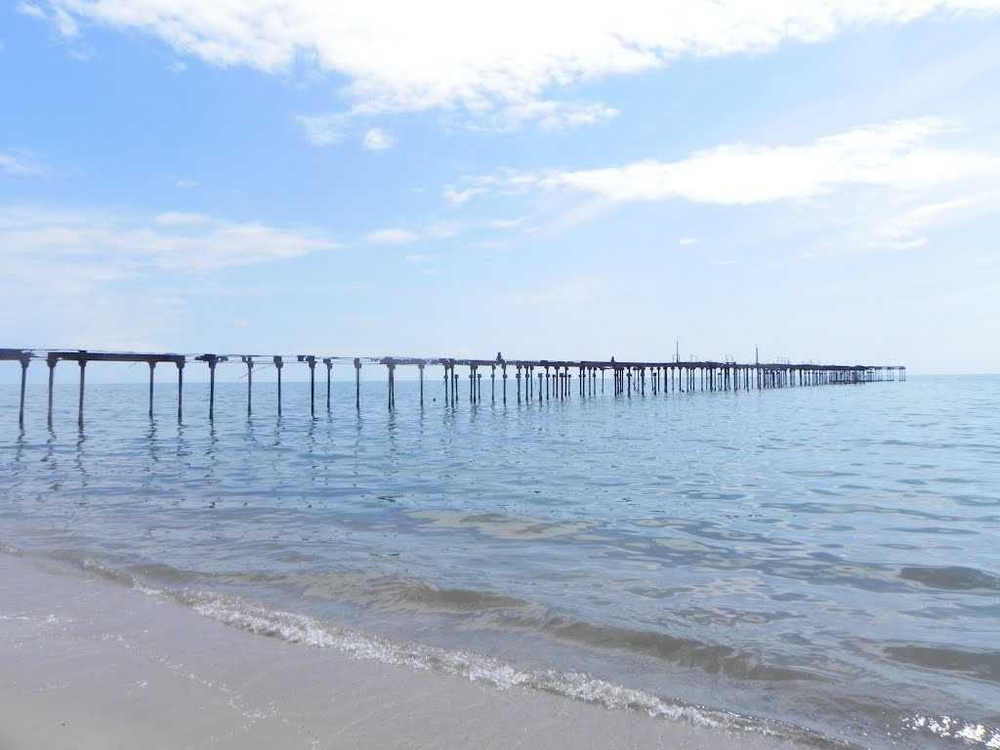
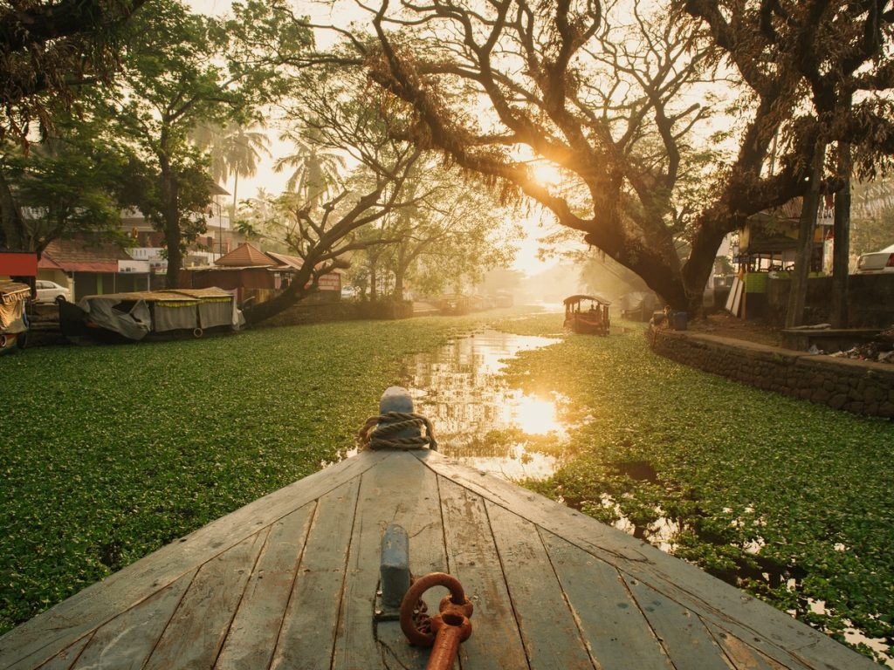
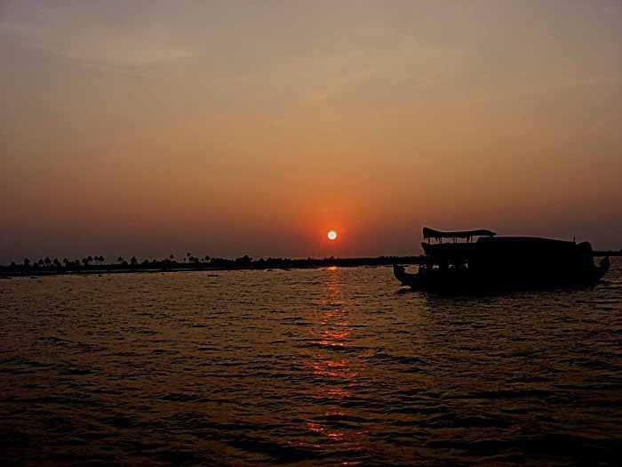

Alappuzha Beach
The Alappuzha beach, also known as the Alleppey Beach, is famous for local getaways, its intrinsic beauty and a 150 years old pier which stretches into the sea. Relaxing under the palm groves and picnicking beside the beach are fantastic options available to those visiting the beach. Alleppey Beach is a host to many festivals like Sand Art festival and Alappuzha Beach Festival.
Kuttanad
Kuttanad is a region covering a large part of Alappuzha and some of Kottayam district, the heart of the backwaters of Kerala. Kuttanad is the 'rice bowl of Kerala', being home to lush green rice fields spread extensively, divided by dykes. Travelling through this secluded alcove of nature will give you a feel of traditional countryside life of Kerala. A special peculiarity of this place is its geography. It lies around 2 metres below the main sea level, making it the lowest altitude place in the country.
Alleppey Backwaters
The Alleppey backwaters was earlier used as a mode of transportation, fishing and agriculture and have evolved over time as a tourism hotspot. The main attraction of the Alleppey backwaters is the overnight journey in the famous Kerala houseboats. These houseboats are as comfortable as any hotel room - sometimes even more luxurious, and as a bonus, you get the open deck.
Vembanad Lake
Vembanad Lake is a lagoon located in the district of Alleppey in the South-Indian state of Kerala. This expansive lake/ lagoon is longest lake in the country and the largest Lake in Kerala.Vembanad Lake is known by different names in different regions of Kerala. It is called the Kochi Lake in Kochi, the Punnamada Lake in Kuttanad and as Vembanad in Kottayam. Locals also call it Vembanad Kol or Vembanad Kayal.